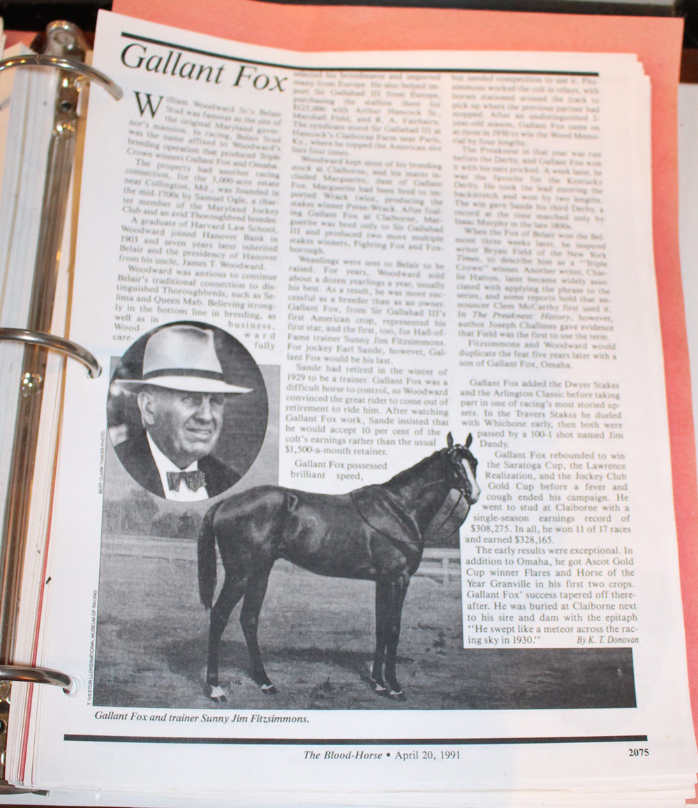

Selima walks 150 miles from Belair to ignite American racing
Before the track, before Gallant Fox, before the Woodwards — there was Selima.
Foaled on April 30, 1745 at the stud farm of the Earl of Godolphin in England, sired by the Godolphin Arabian out of a mare from the personal stable of Queen Anne, she was imported to Belair by Benjamin Tasker Jr. around 1750. She trained at Belair, ran two races, and won both.
Her second race is the one that mattered. William Byrd III of Virginia offered 500 pistoles — Spanish gold coins, the currency of transatlantic trade — that his imported stallion Tryal would beat any horse in a four-mile race. Tasker accepted. Selima walked 150 miles on foot from Belair in Maryland to Anderson’s Race Ground in Gloucester, Virginia. She won by an unmistakable margin, taking home 2,500 pistoles and igniting a racing rivalry between Maryland and Virginia so intense that Maryland horses were subsequently banned from competing in Virginia for years.
Tasker retired her to the broodmare paddock at Belair. She produced ten foals. Her descendants include Man o’ War, every Triple Crown winner, and — through a line that runs from Selima to foundation sire Lexington to Hanover to Sir Barton — the concept of the Triple Crown itself. A replica of the bronze plaque William Woodward commissioned in her honor is displayed at the Belair Stable Museum. The Selima Stakes, run annually at Laurel Park, bears her name.
How Bowie got a racetrack — and why it was here
The Bowie Race Track owed its location to the railroads that shaped Bowie’s development. The Baltimore and Potomac Railroad’s junction at Huntington created the town, and the interurban Washington, Baltimore & Annapolis Electric Railway ran directly past the chosen site. A 1949 Baltimore Evening Sun profile of track superintendent Richard J. “Dick” Pending confirms that George Osbelt, assistant superintendent of the WB&A, personally helped select the Bowie site because the railroad could add a spur line from its main track.
The track was built and initially operated under the auspices of the Southern Maryland Agricultural Society — though a 1949 account reveals the actual owners were Baltimore confidence men Gad Brian and Jim O’Hara. They built the original 3,000-seat grandstand without buying a single piece of lumber: they felled the trees on site, set up a sawmill, and went to work. The first meeting in October 1914 nearly failed before it opened — the New York Jockey Club refused to license the track, forcing organizers to obtain operating dates from the Prince George’s County Circuit Court instead. Opening day drew sixteen bookmakers paying $100 a day; within two days that number had dropped to four.
Race-day WB&A service ran trains from Baltimore with round-trip fares around 65 cents; admission to the grounds and grandstand was $1.00. Pennsylvania Railroad service also ran race trains from multiple cities. After the WB&A collapsed in the 1930s, the Pennsylvania Railroad continued race service by another route. The old WB&A interurban right-of-way is now the WB&A Trail, with its Patuxent River bridge connecting Prince George’s and Anne Arundel County trail segments fully opened in 2025.
Firsts, fires, a blizzard, a zebu, and a presidential visit
1958 blizzard — “When it snows, Bowie goes”
The City of Bowie’s horse-racing history recalls a 1958 blizzard that stranded roughly 3,000 patrons overnight at the track. Blocked roads left fans sleeping in the clubhouse, barns, and cars. The episode gave rise to the local line “When it snows, Bowie goes” — a phrase that captured both the track’s reputation for bad-weather stubbornness and the peculiar loyalty of its regular crowd.
March 1959 — Nixon and Hoover at Bowie
Vice President Richard Nixon visited Bowie Race Track with FBI Director J. Edgar Hoover in March 1959 for Tricia Nixon’s birthday outing — illustrating the track’s reach as a regional institution that drew national figures during the Eisenhower era.
“Long after Bowie is gone, just like at Havre de Grace, a murmur on the wind can be heard echoing the cry of the losing bettor: ‘I was gonna’ or ‘If I’d a…’”
Norman Perrin’s closing letter, quoted in the Baltimore Evening SunA partial chronicle of the remarkable
1927 — Bowie becomes the first racetrack in the United States to install a public address system. 1935 — Premiers the Daily Double in Maryland. March 9, 1955 — Officials discover a full-sized cabin cruiser floating in the infield lake. No one ever explains how it got there.
September 15, 1953 — A jet fighter plane armed with rockets explodes in midair directly over the track and crashes in nearby woods, narrowly missing racing secretary Hattie Maenner. No one on the ground is injured. February 2, 1961 — A Pennsylvania Railroad race train carrying fans to Bowie derails near the course, killing six; hours later, a four-alarm fire breaks out in the grandstand and cancels the ninth race.
January 31, 1966 — During the Blizzard of ’66, fire destroys five barns and kills 41 thoroughbreds and 4 ponies. Firefighters must push a stranded car from the roadway and shovel through three snow drifts to reach the track. About 100 horses are turned loose; some are later found wandering the Belair Shopping Center and the grounds of Glenn Dale Hospital.
February 26, 1972 — The one and only Noah’s Ark International: a zebu wins; a llama finishes second; a camel is third; and “Home On The Range,” a buffalo, throws its rider repeatedly during the post parade and fails to finish. Valentine’s Day 1975 — Four jockeys implicated in a race-fixing scandal. Three serve prison time.
January 1974 — A 22-year-old jockey named Chris McCarron, living in a tack room on the backstretch, wins his first race at Bowie on February 9. He goes on to win 547 races that year, a record, and is inducted into the Racing Hall of Fame. July 13, 1985 — The final race is run as a small plane overhead trails a banner reading “Thanks For The Memories.”
Triple Crown dynasties from Bowie’s own fields
The horses bred and raced by the Woodward family at Belair Stud made the estate one of the most storied racing stables in American history.
1930 & 1935 — The only father-son Triple Crown

William Woodward Sr.’s Belair Stud produced the only father-and-son pair of Triple Crown winners in history. Gallant Fox won the Kentucky Derby, Preakness Stakes, and Belmont Stakes in 1930 — only the second Triple Crown ever achieved, trained by Sunny Jim Fitzsimmons. Five years later, Gallant Fox’s own son, Omaha, swept the same three races in 1935, also trained by Fitzsimmons. No other stable has ever produced two Triple Crown winners in a single bloodline.
Both horses were bred from bloodlines that traced back through the Belair estate’s English imports — the same tradition of imported thoroughbred stock that Governor Samuel Ogle’s family had established at Belair in the 18th century with Selima and other foundational horses. The 1930 and 1935 Triple Crowns were not accidents; they were the culmination of two centuries of careful breeding on the same Maryland ground. Granville, another Belair Stud horse, was named Horse of the Year in 1936, giving the stable three consecutive years of championship-level racing.
Nashua — and the year everything ended
Nashua, owned by William Woodward Jr. and again trained by Sunny Jim Fitzsimmons, was the dominant American thoroughbred of 1954–1955. He won the Preakness and Belmont Stakes in 1955 but lost the Kentucky Derby by 1½ lengths to a California horse named Swaps in a result that shocked the racing world.
The rematch came on August 31, 1955 — a nationally broadcast winner-take-all match race at Washington Park in Chicago for a $100,000 purse. Nashua won by 6½ lengths in what became one of the most-watched sporting events of the era. He retired as the leading money earner in thoroughbred history at the time, with lifetime earnings over $1.2 million.
The match race between Nashua and Swaps drew a crowd of 35,000 at Washington Park and was broadcast to a national radio and television audience. Nashua’s victory was definitive — not close.
Racing record, August 31, 1955The triumph was followed within weeks by catastrophe. In October 1955, Ann Woodward shot William Woodward Jr. at their Long Island home, ending the Woodward era at Belair in a single night. Nashua was sold at auction for a then-world-record $1,251,200 to a syndicate. Two years later, Levitt & Sons bought the Belair estate itself. The same year that produced Belair Stud’s greatest champion also ended the stable, the family, and the estate’s identity as horse country.
Key moments in Bowie’s racing history
Baltimore Evening Sun — racetrack clippings
Two newspaper articles that provide firsthand accounts of Bowie Race Track’s founding and its closing chapter.
“Memories of Bowie to linger long after storied track closes”

Fan Norman Perrin’s recollections at the track’s closing after 71 years of racing. Perrin, who first visited in 1933, describes arriving on the WB&A two-car train, the wood-burning stove in the heated baggage car, and the “Christmas horse” races of that cold Thanksgiving-season Saturday.
“Pending, 56 Years In Saddle As Rider And Trainer, Helped Select Bowie Site”

A profile of Richard J. Pending, track superintendent, covering his role in selecting the Bowie site, the improvised grandstand built from trees felled on the property, and the early conflict with the New York Jockey Club. Pending recalls buying 420 acres near the track after it opened for $5,000 — land now covered by parking lots and stables.